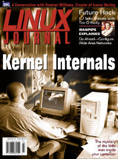

Shutdown Archive web server
Search:
Linux Journal
Issue #82/February 2001

Features
Focus: Kernel Internals
by Don Marti
Making Inodes Behave
by Clay J. Claiborne, Jr.
Claiborne describes the difficulties he encountered while building Linux systems for General Dynamics.
Journaling with ReisersFS
by Chris Mason
Mason gives a tour through the Reiser File System: its features and construction.
The Linux Telephony Kernel API
by Greg Herlein
Herlein explains the integration of the telephony device driver into the Linux kernel.
Inner Workings of WANPIPE
by Nenad Corbic and David Mandelstam
Corbic and Mandelstam discuss the structure and user interfaces to the WANPIPE drivers as they have evolved and currently exist.
Indepth
Web Servers and Dynamic Content
by Dan Teodor
Using legacy languages like C and Fortran can aid computationally complex web applications.
Porting from IRIX to Linux
by George Koharchik and Brian Roberts
Coding for portability to Linux: examples from the ACRT land vehicle port.
Expanding Options for Clustering
by Ken Dove
The role of Linux in the future of clustering.
That's Vimprovement! A Better Vi
by Steve Oualline
Ouallin details the enhancement of the Vim vi clone.
Open Source in Electronic Design Automation
by Michael Baxter
An interview with Stephen Williams, the creator of the Icarus Veriolg compiler.
Remote Sensing with Linux
by Mark Lucas
One company takes the initiative and saves time and money using a Linux Beowulf cluster.
PocketLinux Gives Jabber Its First Hand(held)
by Doc Searls
The “Next Bang” prophecy fulfilled.
Andamooka: Open Support for Open Content
by David Sweet
Open-source software development provides an inspirational model for books.
Toolbox
GFX Linux as a Video Desktop
by Robin Rowe
Kernel Korner
Loadable Kernel Module Programming and System Call Interception
by Nitesh Dhanjani and Gustavo Rodriguez-Rivera
At the Forge
More with Three-Tiered Design
by Reuven M. Lerner
Cooking with Linux
Smell of Fresh-Baked Kernels
by Marcel Gagné
Paranoid Penguin
The 101 Uses of OpenSSH: Part II of II
by Mick Bauer
Columns
Linley on Linux: Linux Enters Router Market
by Linley Gwennap
Linux in Education: Teaching System Administration with Linux
by D. Robert Adams and Carl Erickson
Focus on Software
by David A. Bandel
Focus on Embedded Systems
by Rick Lehrbaum
The Last Word: Finality
by Stan Kelly-Bootle
Linux for Suits
A Talk with Tim O'Reilly
by Doc Searls
Games Penguins Play: Heavy Gear II for Linux
by Neil Doane
Reviews
easyLinux and easySamba
by Joseph Cheek
Linux and the New Internet Computer
by Bill Ball
Python Developer's Handbook
by Phil Hughes
Linux DNS Server Administration
by Ralph Krause
Departments
Letters
upFRONT
Best of Technical Support
New Products
Archive Index
Shutdown Archive web server
Search:
Copyright © 1994 - 2018
Linux Journal
. All rights reserved.